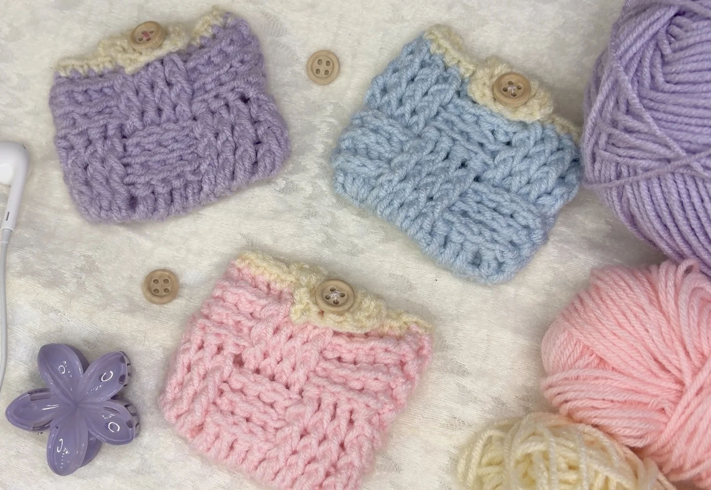
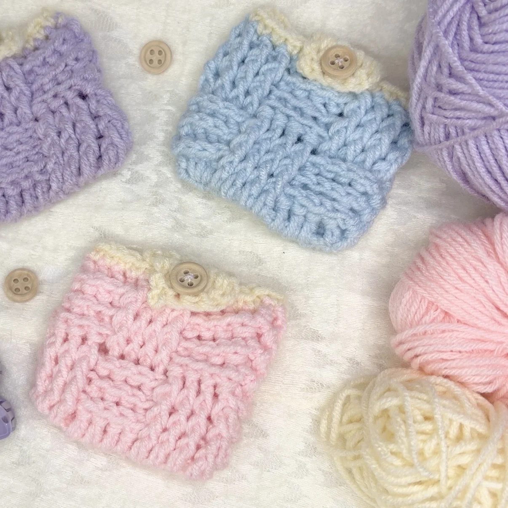

Free Crochet Pattern
How to Crochet a Cute Mini Purse
Looking for a cute little crochet purse with a fun texture? This basket weave mini purse is perfect for carrying your small essentials, whether it’s coins, lip balm, or a few little everyday items. It has a lovely raised texture, a rounded base, and a simple flap with a wooden button closure that gives it a cute, handmade look.
It’s small, practical, and easy to customise with your favourite yarn colours. You can keep it all one colour or add a contrasting border to make it stand out. It’s also a fun little project if you want to try something different from the usual crochet pouches!

About the Pattern
This basket weave mini purse is a fun project if you want to try textured crochet! The pattern uses basic stitches, including double crochet and front-post and back-post double crochet, to create that lovely raised basket weave effect. The post stitches might take a little practice if you haven’t tried them before, but once you get the hang of alternating between them, the pattern becomes much easier to follow.
The purse is worked from the base upwards, followed by the textured body, a contrasting border, and a small flap with a button closure. You can use your favourite yarn colour and add a contrasting shade for the border to give it your own touch. Follow along with the video tutorial if you need help with the basket weave stitches, and take it one row at a time!
Video Tutorial
Want to make this mini purse along with me? Watch the full video tutorial below, where I walk you through each step, from crocheting the rounded base to creating the basket weave texture and adding the flap and button closure.
The basket weave stitch might look a little tricky at first, especially if you’re new to front-post and back-post double crochet, so I recommend watching those parts closely. You can always pause the video and crochet at your own pace. Grab your yarn and hook, and let’s make this cute little purse together!
Materials
- Weight 3 acrylic yarn (or any yarn you prefer)
- 4 mm crochet hook
- A button for the closure (wooden, magnetic, or colorful)
- Needle and thread for sewing
- Scissors
- Stitch marker
Want to shop the materials?
Check out the materials here →Abbreviations
Written Pattern
Written Pattern: Crochet Basket Weave Mini Purse
Before You Start
This little purse is a fun way to try the basket weave stitch! The pattern uses basic double crochet stitches along with front-post and back-post double crochet to create that lovely raised, woven texture.
Before you begin, make sure you’re comfortable with your foundation chain and double crochet stitches. If you haven’t tried front-post and back-post double crochet before, don’t worry! You’ll get the hang of them as you work through the pattern.
Tip: Keep your stitches relaxed, especially when working the post stitches. Pulling them too tightly can make the fabric stiff and harder to work into.
1. The Foundation
Start by making a slip knot and creating a foundation chain. For this basket weave pattern, the stitch count should be a multiple of 8 + 4 extra chains.
Foundation: Chain 12 (8 + 4).
The foundation chain forms the starting point for your purse. We’ll work around both sides of this chain to create an oval-shaped base rather than crocheting back and forth in straight rows.
2. Row 1: Creating the Base
- Skip the first two chains.
- Make 1 dc in each of the next 9 stitches.
- In the very last chain, make 4 dc into the same stitch to create a curved bottom.
- Rotate your work to the other side of the foundation chain.
- Make 1 dc in the next 8 stitches.
- In the last stitch, make 3 dc, mirroring the other side.
- Slst into the very first dc to finish the row.
A little more detail: When you reach the end of the foundation chain, you’ll work several double crochets into the same stitch to help the base curve around. Instead of turning your work as you normally would, rotate it and continue crocheting along the opposite side of the original chain.
This creates an oval base that gives your purse a little room inside. Try to keep the stitches evenly spaced around the curved ends so the base lies as flat as possible.
3. Rows 2–4: Starting the Basket Weave
Row 2: Chain 2. We will now alternate between front and back posts.
- Work 4 fpdc around the next 4 stitches.
- Work 4 bpdc around the next 4 stitches.
- Repeat this alternating pattern all the way around and slst to join.
Rows 3 & 4: Repeat the exact same pattern as Row 2 — fpdc above fpdc and bpdc above bpdc.
Understanding the Basket Weave Stitch
This is where the texture starts to appear! Instead of inserting your hook through the top loops of a stitch, you’ll work around the post of the stitch from the previous row.
- Front-post double crochet (fpdc): Insert your hook around the post from the front of your work.
- Back-post double crochet (bpdc): Insert your hook around the post from the back of your work.
These stitches push certain sections forward and others backward, creating the raised, woven effect.
For Rows 2–4, keep the front-post stitches above the previous front-post stitches and the back-post stitches above the previous back-post stitches. You’ll start seeing little blocks of texture form as you go.
Tip: If the post stitches feel confusing at first, watch the video tutorial alongside the written instructions. Once you understand where your hook needs to go, the repeating pattern becomes much easier!
4. Rows 5–7: Swapping the Pattern
To get that woven look, we now swap the stitches.
Row 5: Chain 2.
- Above the previous front posts, work 4 bpdc.
- Above the previous back posts, work 4 fpdc.
- Continue this all the way around and slst to join.
Rows 6 & 7: Repeat the same pattern as Row 5.
Why Are We Switching the Stitches?
This switch is what gives the basket weave its distinctive texture! By working back-post stitches where you previously worked front-post stitches, and vice versa, the raised and recessed sections change position.
As you continue, you’ll notice the texture forming a woven grid. Take a moment to look at your work after each round so you can see how the pattern develops.
Keep following the instructions carefully, and remember that consistency matters more than speed. Once you’ve completed these rows, your little purse will have its signature basket weave texture.
5. The Edging
To finish the body, pull through a contrasting yarn color such as white during your last slip stitch.
Chain 1 and make 1 sc in every stitch all around for a clean, neat look.
Slst, fasten off, and weave in your ends.
A little finishing touch: I love adding a contrasting border because it makes the top of the purse look neat and gives the textured body a nice definition. White is a lovely option, but you can use any colour that complements your main yarn.
Try to keep your single crochet stitches evenly spaced around the opening. This helps the border look tidy without pulling the top of the purse too tightly.
6. The Flap & Assembly
The Flap
Insert your hook into the center section of the pouch, working into the middle 4 stitches.
Attach your yarn, ch 2, and make 1 dc in each of those 4 stitches for two rows.
The flap gives your mini purse a simple finish and helps keep your small essentials tucked inside. Make sure you’re working into the centre stitches so the flap sits neatly in the middle of the pouch.
Final Step
Sew your chosen button onto the front of the pouch using a needle and thread.
Choose a button that complements your yarn colour. A little wooden button gives the purse a cute, rustic look, but you can use any button you have on hand.
Before sewing it on permanently, fold the flap over the front and check where the button should sit. This helps you position it correctly so the flap closes neatly.
Style Tip
Experiment with different color combinations or unique buttons to make this pouch your own!
You could use one colour for the entire purse, add a contrasting border, or try a different shade for the flap. You can even make a few in different colours to match your bags or outfits.
The basket weave texture already adds plenty of character, so have fun choosing colours and buttons that suit your style.
Once everything is assembled and your loose ends are woven in, your crochet basket weave mini purse is ready to use!
A Little Note from Stitchy Days ♡
Hi there!
Thank you so much for trying one of my crochet patterns! I’m so happy to have you here, and I hope you enjoy making this project as much as I enjoyed creating it.
If you make something using this pattern, I’d love to see it! Feel free to tag Stitchy Days when you share your finished project. Seeing your creations means so much to me as I continue growing this little crochet corner.
Thank you for supporting my work and happy crocheting! ♡
